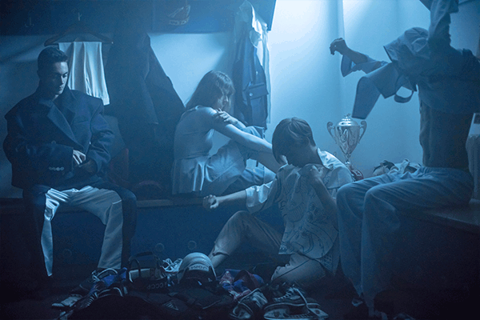
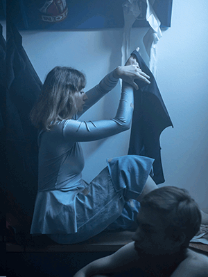
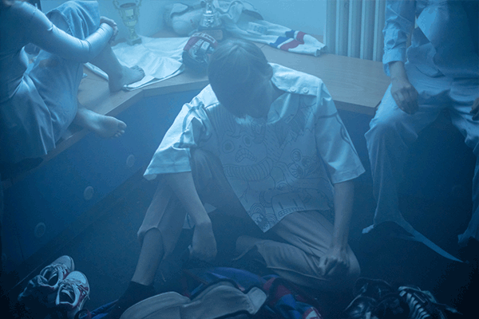

About the collection
The “oh boy“ collection is a story of siblings, preparing for their game. Game for the few, where you are in charge of your own armour. Steal- ing dad’s tailored jackets, hockey armour and pyjamas, found in his closet and combining it with figure skating dresses and tights of their own, prepared for your next training. Towels could do, you have plen- ty around the house. The denim insulation you saw laying around the shed could also be useful, it might get cold.



